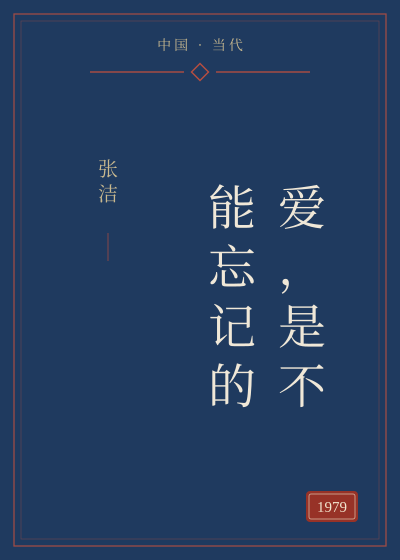
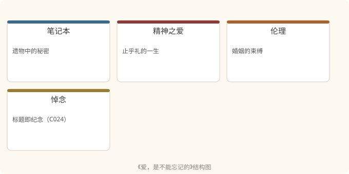

爱，是不能忘记的
一、基本信息
| 作者 | 张洁 |
|---|---|
| 成书/出版 | 发表年份待核（新华网 C024：代表作包括'《沉重的翅膀》《方舟》《祖母绿》《只有一个太阳》《知在》《灵魂是用来流浪的》等'——本篇未列入正文名单，篇名仅见于标题语境） 北京作协悼念张洁：爱，是不能忘记的（新华网）（官方媒体） |
| 国别/地区 | 中国 |
| 时代 | 现当代 · 当代 |
| 体裁 | 短篇小说 |
| 语言 | 汉语（白话） |

《爱，是不能忘记的》结构图（主题·结构图）
二、创作背景
新华网（C024）：北京作协以'爱，是不能忘记的'为题悼念张洁——该篇为其代表性的爱情书写（标题语境）；正文所列代表作另见 C024。
地位（通说待核）：新时期爱情伦理讨论的发端之作。
三、内容脉络
女儿解读母亲笔记本：母亲与老干部'发乎情止乎礼'的一生（通说待核）。
'爱的_absence'：无性的精神恋爱（通说待核）。
四、主要人物表
| 人物 | 身份 | 说明 |
|---|---|---|
| 母亲（钟雨） | 作家 | 笔记本的主人（通说待核） |
| 老干部 | 革命者 | 有妇之夫（通说待核） |
五、主题与艺术特点
- 精神之爱与婚姻伦理（通说）。
- 女性视角的爱情书写（通说）。
- '爱，是不能忘记的'的悖论（通说待核）。
六、影响与评论
- 新华网：北京作协借该篇名致哀——'爱，是不能忘记的'（C024 标题）。
北京作协悼念张洁：爱，是不能忘记的（新华网）（官方媒体） - 中国作家网官方名单：张洁两获茅奖（C012/C024 作者级）。
北京作协悼念张洁：爱，是不能忘记的（新华网）（官方媒体）
七、阅读建议
难点
- 书信/笔记嵌套。
- 1979年的伦理语境。
- 《爱，是不能忘记的》（收于张洁小说集，通说待核）。
先本作后《沉重的翅膀》《无字》。
八、待核实
- 1979年（《广州文艺》说）核对。
- 钟雨/老干部人名核对。
- 笔记本嵌套结构待核。
本页主要来源
张洁的其他收录作品：无字